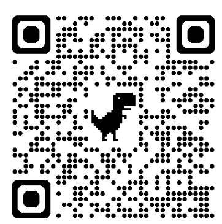
南投縣立南投國民中學 · 115 學年度 · 二年級戶外教育活動
隔宿露營 行動簡報手冊
尖山埤山訓探索 · 野營炊事 · 團結成長之旅（去個資版）
活動規劃：兩天一夜（115年10月27日 ～ 10月28日） ｜ 營訓基地：台南-尖山埤露營區（06-6233888）
隨隊長官：劉O彥 校長、董O遠 學務主任、姚O勤 訓育組長 暨 二年級全體導師（801～807班）
PLAN & LOCATION · 官方實施計畫
實施計畫與活動基地 · 台南尖山埤露營區
| 活動主旨 | 自立自強、主動敏捷、互助合作，於「做中學、學中做」熟練各項童軍野外求生技能。 |
|---|---|
| 活動時間 | 115年10月27日 (二) 至 10月28日 (三)，兩天一夜。 |
| 起訖時間 | 10/27 (二) 07:30 校園集合（921地震公園逃生演練），08:00 準時出發；10/28 (三) 16:20 返抵學校。 |
| 參加對象 | 二年級全體師生，學生 106 人、隨隊師長，共計 116 人。 |
| 承辦單位 | 中國青年旅行社中部分公司 ｜ 團控經理：邱O凱 (0972-721756)。 |
🏕️ 台南柳營尖山埤露營區（台糖尖山埤渡假村）
特色：尖山埤水庫湖光山色，配備標準高空山訓塔台、人工攀岩壁、低空PA探索場、安全水彈生存遊戲戰場與大營火晚會草坪。
SCHEDULE · 第一天行程
Day 1：啟程開訓 · 營地建設 · 童軍分站 · 野炊競賽 · 營火晚會
| 時間 | 活動項目 | 重點備註與實施內容 |
|---|---|---|
| 07:30-08:00 | 學校集合 | 921地震公園暨南投國際會展中心園區（逃生演練） |
| 08:00-10:00 | 乘車出發、安全檢查 | 專車國道南下，抵達營地時實施人員與裝備安全檢查 |
| 10:00-11:00 | 喜相逢～環境認識 | 活動小隊編組、環境認識、安全檢查 |
| 11:00-12:00 | 始業式～營規介紹 | 值星官宣佈營規、介紹工作人員、環境設施介紹 |
| 12:00-13:00 | 午餐時間 | 各班就座享用營養中式便當，垃圾分類 |
| 13:00-14:00 | 野營常識介紹 | ①帳棚搭設講解 ②環境認識 ③器材使用領取 |
| 14:00-17:00 | 分站教育 Part 1 | 童軍技能教育：（1）生火技巧烹調（2）戰術偽裝方向（3）繩結運用（4）六大毒蛇辨識（5）晚會預習動唱 |
| 17:00-19:00 | 晚餐(炊事競賽) | 全校15個野炊小隊炊事競賽，廚藝美味評比 |
| 19:10-21:30 | 超ㄅ一ㄤˋ營火晚會！ | 班級節目競賽、隊輔勁歌熱舞、團體趣味動唱、薪火相傳燭光夜語 |
| 21:30-22:30 | 盥洗、宵夜 | 分批盥洗、領取熱騰騰宵夜甜品補充體力 |
| 22:30----- | 就寢＆查舖 | 進帳熄燈，室長確實清點人數，導師巡房查舖 |
SCHEDULE · 第二天行程
Day 2：晨喚有氧 · 分站山訓極限探索 · BBQ盛宴 · 結訓頒獎
| 時間 | 活動項目 | 重點備註與實施內容 |
|---|---|---|
| 06:00-06:30 | 起床～做個跟太陽賽跑的人 | 晨喚梳洗，整理個人睡袋與防潮墊行囊 |
| 06:30-07:20 | 活力有氧、曬帳拆帳 | 早操時間、大草坪晨操，內務晨檢評分與曬帳收整 |
| 07:20-08:00 | 早餐時間 | 渡假村營地餐廳享用熱騰騰中式合菜早餐 |
| 08:00-11:30 | 分站教育 Part 2：山訓探索 | 五大項次： （1）膽量大考驗、進擊の垂降 （2）解手結、團隊跳繩 （3）超級蜘蛛人～攀岩絕技 （4）生存遊戲、水彈競賽 （5）獨木橋（雙索、三索吊橋） |
| 11:30-14:00 | 午餐時間 | 歡樂 BBQ 炭烤大餐！慶祝各項任務過關達成 |
| 14:00-15:00 | 結訓典禮～～I’m the Best！！ | 頒發：炊事比賽、晚會節目、晨檢、分站活動、生活教育與【精神總錦標】競賽獎項 |
| 15:00-16:20 | 平安抵校～～Bye-Bye！ | 專車啟程返校，預計 16:20 返抵南投國中，互道珍重 |
TRANSPORTATION · 官方車次團務表
遊覽車編組與隨車師長團務表（去個資版）
| 車次 | 搭乘班級 | 男 | 女 | 人數 | 素食 | 隨車行政與導師 |
|---|---|---|---|---|---|---|
| 1車 | 805 班 (205) | 7 | 4 | 20 | 1 | 董O遠 (學務主任)、林O銓 (805導師)、許O玉 (806導師) |
| 806 班 (206) | 4 | 5 | ||||
| 2車 | 802 班 (202) | 6 | 12 | 33 | 0 | 黃O君 (802導師)、李O儒 (804導師) |
| 804 班 (204) | 7 | 8 | ||||
| 3車 | 801 班 (201) | 10 | 7 | 32 | 0 | 黃O月 (801導師)、林O玟 (803導師) |
| 803 班 (203) | 6 | 9 | ||||
| 丁車 | 807 班 (207) | 8 | 13 | 21 | 0 | 姚O勤 (訓育組長)、黃O慧 (807導師) |
| 全校合計 | 48 | 58 | 106 | 1 | 校長劉O彥、團控經理邱O凱 | |
🚌 行車安全四大守則
- 全員繫妥安全帶：車輛發動前至抵達營地全程繫好安全帶。
- 走道淨空：背包置於上方行李架或下方行李艙，保持逃生通道暢通。
- 逃生演練落實：發車前確認車頂逃生窗、安全門與車窗擊破器位置。
- 維護車內清潔：車內不奔跑走動、垃圾隨手打包，下車聽從指揮。
PRE-CAMP BRIEFING · 重要生活叮嚀
📢 隔宿露營行前說明會 · 四大生活規範與違紀處分叮嚀
🚫 一、違禁品出發前再檢查一次
出發前安檢
嚴禁攜帶菸品、酒類、檳榔、刀械與打火機等危險物品！
出發當天於 921 地震公園集合時，各班導師與行政團隊將實施最後隨身行李安全檢查，嚴防違禁品進入營區。
🪪 二、個人物品與通訊報平安
物品與通訊
必備健保卡正本、個人常備醫藥、零用錢 600 元以內、體育服（晚上盥洗後就寢換穿）。
手機統一保管機制：露營期間手機由隨隊人員統一保管，第一天晚間安排約 1 小時開放通話向家長打電話報平安。
👕 三、服裝儀容與畢旅表現連動
服裝紀律
出發當日著便服或班服，下身務必穿著「深色長褲」（防蚊蟲叮咬割傷與山訓磨損）。
【重要連動】：未來國三畢業旅行服裝穿著開放彈性，將完全依據全體同學在本次隔宿露營日常規律與表現評定！
🚨 四、機動車待命！重大違紀即刻遣返
記大過處分【機動車待命遣返專送機制】：凡違犯校規之打架滋事、抽菸、喝酒、吃檳榔等重大不良行徑，營地現場備有機動車輛，即刻專車送回學校，通知家長當天帶回家管教！並依校規嚴厲【記大過】處分！
CAMPING SKILLS · 教學參考 ①
野營常識 · 營地規劃原則與標準一般露營帳棚
🏕️ 營地規劃五大分區
2. 炊事區：靠近水源與洗手台，備妥滅火水源與滅火器。
3. 活動場地：中央平坦草坪，供晨操集合與動態訓練。
4. 洗手間 WC：動線清晰、夜間備有照明。
5. 垃圾資源回收場：落實廚餘與乾淨分類，遠離寢帳。
📦 一般露營帳（蒙古包帳）標準器材

CAMPING SKILLS · 教學參考 ②
野營常識 · 帳棚搭設六步驟分解圖解（手冊第 14 頁）
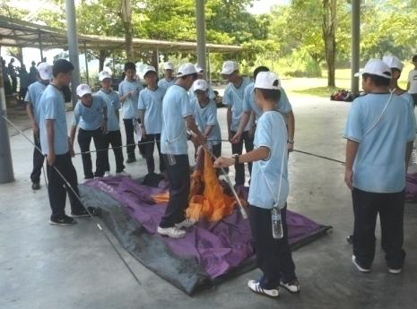
1. 取出鋪平
內帳攤開鋪平，營門拉鍊閉合。「如何取就如何收」。
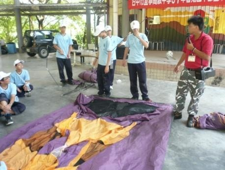
2. 組合營柱
組合交叉四邊營柱，檢查金屬套管確實緊扣。
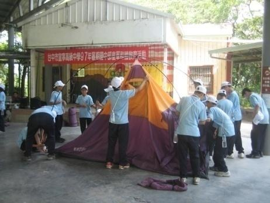
3. 固定插銷
營柱四端插入地布四角插銷或小釘對齊定位。
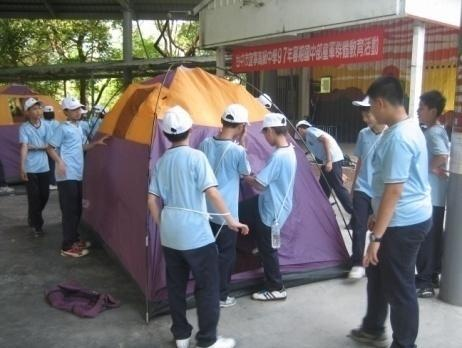
4. 吊掛內帳
將內帳掛勾依序扣在營柱上，平穩撐起內帳主體。
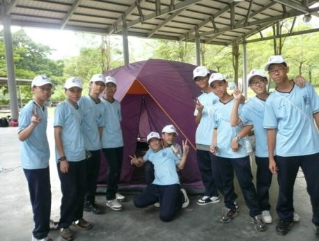
5. 穿架外帳
短營柱橫向支撐門簷前廳，穿過頂端與外帳組合。
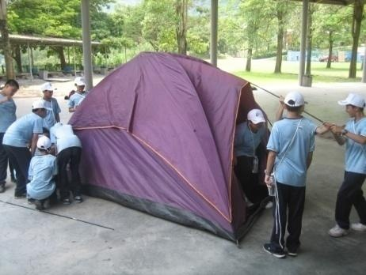
6. 拉繩打釘
覆蓋防水外帳，拉副營繩45度釘入，維持內外分離。
CAMPING SKILLS · 教學參考 ③
野營常識 · 收外帳口訣、曬帳技巧與營地注意事項
🗣️ 經典收外帳口訣
「一拜天地，二拜高堂，夫妻相拜，送入洞房。」
（形容四角平整對摺、中央緊密合摺並滾捲收納入袋）
☀️ 隔日清晨曬帳技巧（晨檢評分關鍵）
- 拔內帳四角營釘：鬆開地面拉力。
- 調鬆內帳邊繩：使骨架留有活動裕度。
- 抬高內帳：讓晨風通風對流，排乾帳底濕氣。
- 固定內帳：曝曬乾燥後才能進行收帳折疊，避免反潮發霉！
⚠️ 營地三大安全注意事項（手冊明載）
- 內外帳不能貼緊：貼合會導致冷凝反潮，「外面下大雨，裡面下小雨」！
- 晚上鞋子倒放在外帳下：開口朝下傾斜，防止晨露打濕，並防止蛇類與蜈蚣跑入冬眠。
- 搭帳標準：搭帳兩分鐘，收帳三分鐘，團隊分工展現默契。
SCOUT SKILLS · 教學參考 ④
童軍技能 · 生火技巧、三級柴火與野炊煮飯要領
🔥 削火媒棒與三級柴火堆疊
火媒棒：小刀 45° 削出薄羽狀木屑，增加與空氣接觸面積。
引火柴 (Tinder)：火種、枯乾細草、細枯松針，一星即著。
助燃柴 (Kindling)：牙籤至小指粗乾燥枯枝，交叉搭建通風塔型。
燃燒柴 (Fuel)：耐燒木炭與腕粗木塊，提供持久穩定紅火熱源。
🍚 野炊煮出香Ｑ白飯金牌秘訣
洗米浸泡：米泡水 15~20 分鐘，米水比 1 : 1.1～1.2。
大火煮滾：井字柴大火燒滾至鍋蓋邊緣噴出濃白蒸氣。
小火收乾：轉微火慢煨約 5 分鐘，聞到微焦飯香。
離火燜飯：【不可掀蓋！離火燜放 15 分鐘】，米粒香Ｑ透心！
SCOUT SKILLS · 教學參考 ⑤
童軍技能 · 自然方向辨識六大模式（每種附圖解與影音）
SCOUT SKILLS · 教學參考 ⑥
童軍技能 · 出神入化！手冊常用八大繩結（每種附圖解與教學影音）
OUTDOOR SAFETY · 教學參考 ⑦
野外安全 · 臺灣主要毒蛇辨識與習性（每種附圖解與教學影音）
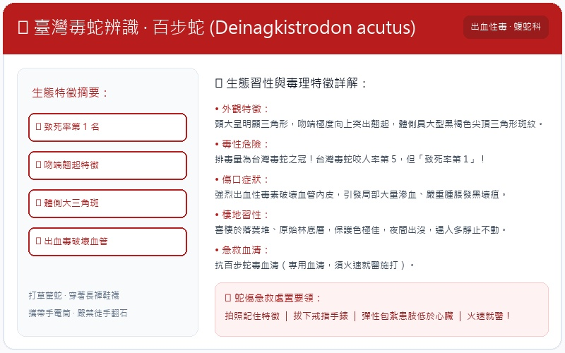
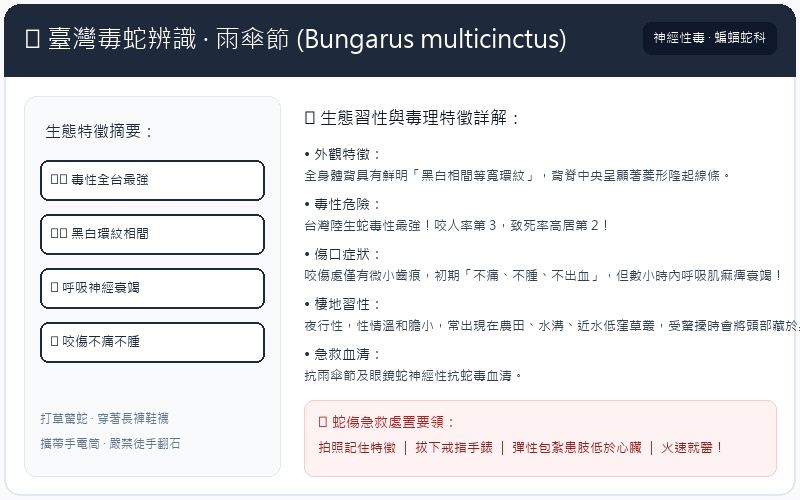
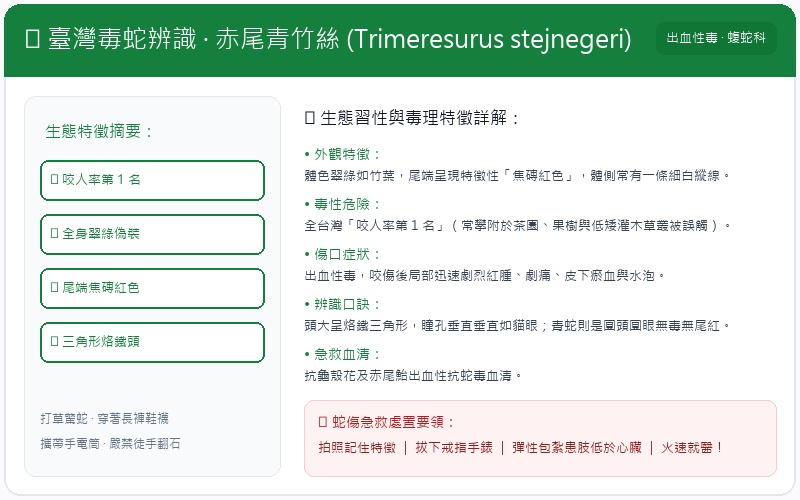
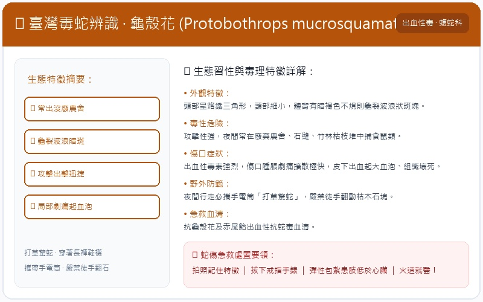
FIRST AID · 教學參考 ⑧
野外安全 · 毒蛇咬傷自救【五要五不】圖示原則
✅ 毒蛇咬傷【五要】原則
❌ 毒蛇咬傷【五不】禁忌
FIRST AID · 手冊官方課程
簡易急救 · 割傷止血、抽筋、流鼻血與骨折處理（每種附圖解與影音）
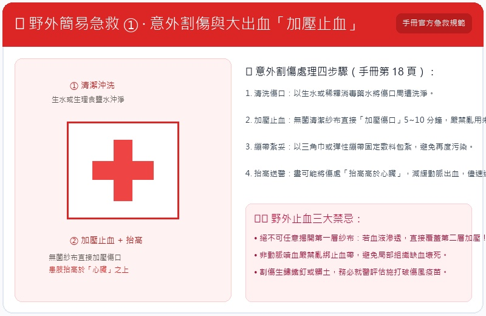
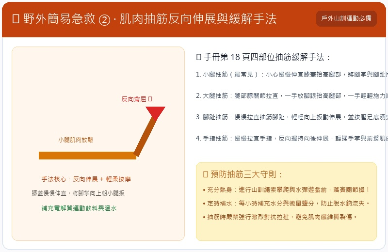
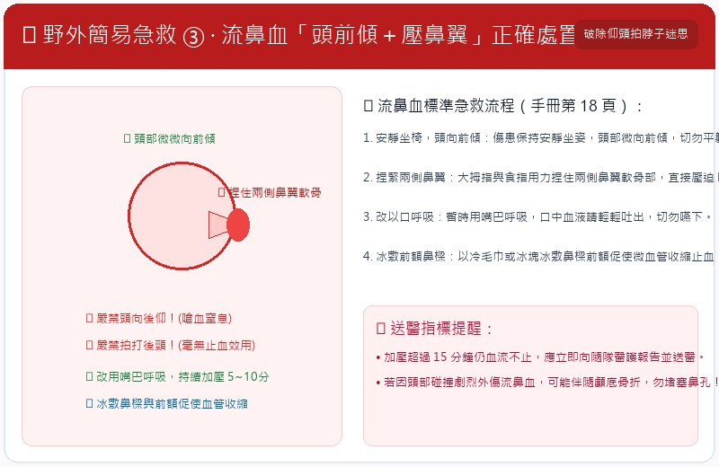
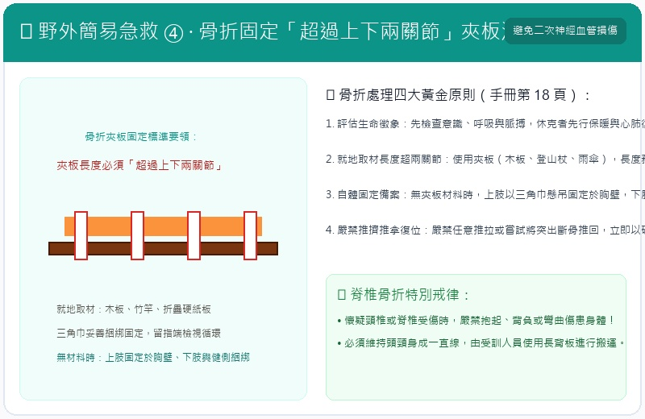
CAMPFIRE NIGHT · 青春高潮
童軍技能 · 超ㄅ一ㄤˋ營火晚會儀式、拜火詞與燭光夜語
🔥 營火晚會三部曲
神聖迎火：火神引火入場、全場靜肅，齊誦神聖拜火詞。
歡狂動唱：班級創意節目競賽、隊輔勁歌熱舞、趣味動唱嗨翻星空！
薪火相傳：營火轉為溫暖燭光，圍坐草坪與導師分享成長印記。
🗣️ 神聖拜火詞
「阿給拉～魯巴～魯巴！偉大的火神，請賜予南投國中光明、勇氣與熱情！熊熊營火，燃燒吧！」
🎵 經典營火歡唱歌謠
- 《營火歌》：朋友！燃起這營火，照耀著我們的友誼...火花在黑夜裡飛舞...
- 《成吉思汗》：風沙滾滾，戰馬奔馳，嘿！喝！嘿！喝！無敵南投健兒！
- 《第一支舞》：帶著笑容，你走向我，做個邀請的動作...難忘的夜晚...
- 《薪火相傳》：手捧溫暖燭光，敞開心扉，感謝導師與同儕陪伴。
ADVENTURE EDUCATION · 探索教育
探索教育 · 體驗式學習四大精神 ＆ FVC 三哲學
📖 體驗式學習 (Learning by Doing)
「閱讀的資訊能學到 10%；聽到的資訊能學到 15%；但所經驗過的事，我們卻能學習到 80%！」
身心合一，去感受、在實踐中超越自己。
🌟 體驗式學習四大執行精神
1. Learning by doing：做中學，身心合一團隊參與。
2. Everything for fun：有趣放鬆的模式，進入深度心靈學習。
3. Open space：開放思維，解構心智、歸零學習。
4. Master：自發性學習意願，彼此尊重與成長喜悅。
🤝 探索教育三哲學 (Full Value Contract)
- 同意像一個團隊一樣地工作，為個人及團隊目標而努力。
- 同意堅守安全規則及團體行動方針。
- 無論是積極或消極的回饋，都願意貢獻或自團體接收，並朝向適當的行為改變。
🎯 選擇性挑戰 (Challenge by Choice)
所有的挑戰都是參加者自己選擇的，做不同選擇的背後要付出不同代價。當你不確定自己在做什麼的時候，恭喜你，表示你正在成長！
MOUNTAIN TRAINING · 山訓探索 ①
山訓探索 · 膽量大考驗！進擊の高空垂直垂降
🧗 裝備與安全檢核 (Buddy Check)
UIAA 認證岩盔、坐式安全吊帶（貼合一指寬反扣）、八字環下降器、主鎖大D扣死、防磨手套。兩人一組相互檢核。
🦵 站姿與制動四要領
- 雙腳微開：與肩同寬，腳底平實踩踏塔台岩壁邊緣。
- 大膽後傾：身體勇敢後傾 45°～60°，背與壁垂直，重心下沉於腳底。
- 雙手分工：上方導繩手（左手）輕握繩索導向；下方制動手（右手）置於右後臀。
- 制動煞停：【右手往前往上繩鬆即下滑、右手貼臀扣緊即煞停】！
MOUNTAIN TRAINING · 山訓探索 ②
山訓探索 · 超級蜘蛛人～人工岩場攀登絕技
🕷️ 攀岩三大黃金法則
- 三點不動一點動：保持三點支撐三角形，一次僅移動一肢，維持平衡重心。
- 重量在腳不在手：腿肌力量比手臂大三倍！手臂主要貼壁導向，發力全靠雙腳蹬起！
- 重心貼近岩壁：肚臍核心貼壁，避免「屁股外凸」，大幅減輕手臂抓握負擔。
🔔 頂峰敲鈴與安全下降
登頂後伸手擊打頂峰鈴鐺！下降時雙手抓緊胸前主繩，雙腳自然張開大字型輕觸岩壁，由地面確保教官平穩緩慢放繩至地面。
MOUNTAIN TRAINING · 山訓探索 ③
山訓探索 · 獨木橋橫渡 ＆ 雙索、三索突擊吊橋走法
※ 雙索突擊吊橋走法（手冊規範）
通過人員行進時兩手兩足同時向對岸橫移，步幅每步約 45 公分，不宜過大。手掌不得離開手索，足掌不得離開足索，體重落於足索上，微向前傾，身心盡量保持平衡與安定。
※ 三索突擊吊橋走法（手冊規範）
通過人員前進時雙手握兩側繩索，雙腳外八字行走於足索，兩眼注視足索，步幅不宜過大，身體重心落於足索，力求穩步前進。
🪵 獨木橋平衡三要素
- 重心壓低：雙膝微彎吸收木橋晃動，重心沉於腹部下丹田。
- 雙臂平展：雙手水平張開如天平兩側微調平衡。
- 視線向前：雙眼鎖定前方終點，切忌低頭看腳底！
ADVENTURE EDUCATION · 探索教育 ②
探索教育 · 解手結謎題 (Human Knot) ＆ 團隊跳繩心跳同頻
🤝 PA 經典探索：解手結 (Human Knot)
遊戲規則：小隊圍圈伸出雙手，隨機牽住不同隊友左右手（不牽相鄰者、同人不重複）。在「雙手絕不鬆開」的前提下，藉由跨步、翻轉、鑽身，將糾結的手結還原為一個完整大圓圈。
團隊意涵：考驗傾聽他人聲音、溝通協調、系統化思考與彼此的肢體信任。
🪢 團隊跳繩 (Team Jump Rope)
甩繩手穩定：兩名甩繩手保持均勻大弧度擺盪，大繩觸地發出穩定節奏「啪」。
全員同步：進場踩準反彈節拍，齊呼口號「一、二、跳！」，呼吸與步伐完全一致。
🏆 團隊突破三大心法
2. 專注指揮核心：一人發號施令，全員專注配合執行。
3. 團結就是力量：個人的堅持成就班級集體的最高榮譽！
TACTICAL GAME · 山訓探索 ④
探索教育 · 水彈生存競技戰術 ＆ 13 條安全守則
🛡️ 水彈 13 條安全守則（手冊明載）
- 遵守水彈場內遊戲規則。 ｜ 2. 遊戲中請著個人裝備。
- 嚴禁持槍朝向他人。 ｜ 4. 任何狀況下不得窺視水彈槍口。
- 射擊時應注意方向與距離。 ｜ 6. 水彈槍應存放安全位置。
- 在遊戲進行中嚴禁取下護目面罩！
- 禁止在非指定射擊區域進行射擊。
- 非遊戲時請將水彈槍上保險，並套上槍口塞。
- 禁止近距離內對人體射擊（國際以十英呎為界定）。
- 嚴禁對裁判員、觀察員及出局者射擊。
- 嚴禁對非參與遊戲者或護具不全者射擊。
- 嚴格遵守各遊戲場特殊規定，確保遊戲安全。
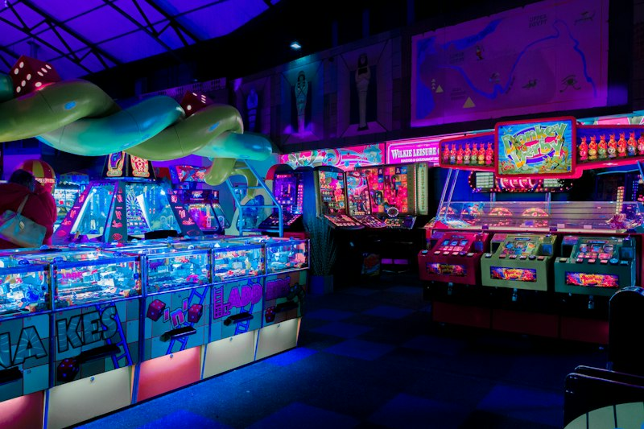
🎯 團隊戰術佈陣
前鋒推進：利用掩體交替掩護前進。
中鋒壓制：點射壓制敵方火力掩護轉移。
後方陣地：保全隊旗，中彈者自覺高舉雙手退場展現榮譽！
PACKING LIST · 想一想，準備好了，出發！
行前必備 · 行李清單與打包防護（手冊官方標準）
🪪 重要證件與個人隨身
- 健保 IC 卡 (必備！)：隨身背包內層防水收納
- 少量零錢、少許行動零食
- 帽子、雨具（輕便型雨衣）
- 行動電話或充電器、行動電源
👕 服裝與鞋襪
- 換洗衣物及保暖外套（長袖防風、早晚溫差）
- 運動鞋（山訓活動全程穿著，禁穿涼拖鞋訓練）
- 拖鞋（盥洗與夜間帳區換穿）
- 運動厚襪（多備 1~2 雙）
🧼 衛生保健與防護
- 盥洗用具（牙刷、牙膏、毛巾）
- 個人備用口罩 2~3 片
- 防曬及保養用品、防蚊液
- 私人藥品（氣喘、感冒、暈車藥等醫師處方藥）
🎒 裝備與收納袋
- 旅行雙肩背包（裝載全部個人裝備，勿手提散落）
- 乾淨塑膠袋 2~3 個（換洗髒衣與防潮使用）
- 相機、電池或充電器（選帶）
- 水壺 / 環保杯（隨時補充水分）
CAMP RULES & HONORS
營規生活須知 · 精神總錦標計分 ＆ 緊急應變聯絡
🏆 精神總錦標與競賽獎項評比
評比要點：集合守時、服從值星官、帳篷內務整潔、野炊環境復原、團隊歡呼與勝不驕敗不餒風度。
📋 營區四大紀律
- 全體行動聽從師長指揮，嚴禁私自離隊夜遊。
- 22:30 就寢號響一律熄燈就寢，男生嚴禁入女帳、女生嚴禁入男帳。
- 愛護營地公物花草，垃圾分類廚餘入桶。
- 遇任何身心不適或突發狀況，第一時間向導師或醫護站反應。
📞 緊急應變聯絡網
台南尖山埤露營渡假村：(06) 623-3888
承辦旅行社：中國青年旅行社中部分公司
團控經理：邱O凱 0972-721756
隨隊行政主管：學務主任 董O遠、訓育組長 姚O勤
TENT ALLOCATION · 帳篷住宿表 ①
801 班 ＆ 802 班 帳篷住宿分配一覽表（去個資版）
| 班級 | 帳棚 | 車次 | 性別 | 人數 | 全體住宿名冊（名字第二字 O 遮罩） |
|---|---|---|---|---|---|
| 801 班 導師：黃O月 |
A01 | 3車 | 男帳 | 5人 | 林O諼、張O鈞、張O偉、吳O岷、谷O恩 |
| A02 | 3車 | 男帳 | 5人 | 湯O丞、陳O廷、許O瑋、陳O宗、賴O豪 | |
| B01 | 3車 | 女帳 | 3人 | 林O言、劉O含、藍O詒 | |
| B02 | 3車 | 女帳 | 4人 | 林O嫻、江O婷、陳O翎、陳O涵 | |
| 802 班 導師：黃O君 |
A03 | 2車 | 男帳 | 3人 | 黃O睿、葉O毅、廖O惟 |
| A04 | 2車 | 男帳 | 3人 | 劉O宇、張O瑋、簡O宸 | |
| B03 | 2車 | 女帳 | 4人 | 李O妮、李O甯、鄭O琳、黃O蒂 | |
| B04 | 2車 | 女帳 | 4人 | 簡O懿、黃O薇、賴O其、鐘O彤 | |
| B05 | 2車 | 女帳 | 4人 | 郭O琪、廖O昕、胡O薰、張O桔 |
TENT ALLOCATION · 帳篷住宿表 ②
803 班 ＆ 804 班 帳篷住宿分配一覽表（去個資版）
| 班級 | 帳棚 | 車次 | 性別 | 人數 | 全體住宿名冊（名字第二字 O 遮罩） |
|---|---|---|---|---|---|
| 803 班 導師：林O玟 |
A05 | 3車 | 男帳 | 3人 | 許O煜、陳O熙、蔡O呈 |
| A06 | 3車 | 男帳 | 3人 | 陳O天、陳O瑜、李O成 | |
| B06 | 3車 | 女帳 | 5人 | 王O芝、石O芳、吳O恩、吳O蓉、潘O汝 | |
| B07 | 3車 | 女帳 | 4人 | 邱O慈、陳O羽、謝O璇、沈O愉 | |
| 804 班 導師：李O儒 |
A07 | 2車 | 男帳 | 3人 | 陳O光、蕭O皓、陳O昇 |
| A08 | 2車 | 男帳 | 4人 | 林O澄、許O翔、劉O振、張O帆 | |
| B08 | 2車 | 女帳 | 4人 | 王O涵、陳O妘、張O晴、劉O硯 | |
| B09 | 2車 | 女帳 | 4人 | 羅O茜、簡O璇、余O婷、洪O瑄 |
TENT ALLOCATION · 帳篷住宿表 ③
805班、806班 ＆ 807班 帳篷住宿分配一覽表（去個資版）
| 班級 | 帳棚 | 車次 | 性別 | 人數 | 全體住宿名冊（名字第二字 O 遮罩） |
|---|---|---|---|---|---|
| 805 班 導師：林O銓 |
A09 | 1車 | 男帳 | 4人 | 林O竹、郭O佑、陳O庭、嚴O諭 |
| A10 | 1車 | 男帳 | 3人 | 吳O鋒、簡O宇、張O瑜 | |
| B10 | 1車 | 女帳 | 4人 | 劉O硯、吳O瑜、黃O薇、鄭O妮 | |
| 806 班 導師：許O玉 |
A11 | 1車 | 男帳 | 4人 | 吳O文、曾O承、洪O倫、張O棋 |
| B11 | 1車 | 女帳 | 5人 | 陳O臻、李O榕、林O妤、范O英、廖O慈 | |
| 807 班 導師：黃O慧 |
A12 | 丁車 | 男帳 | 4人 | 吳O霆、洪O熙、張O睿、黃O壬 |
| A13 | 丁車 | 男帳 | 4人 | 呂O辰、林O福、林O旻、許O瀚 | |
| B12 | 丁車 | 女帳 | 4人 | 張O瑄、郭O岑、黃O浠、詹O靜 | |
| B13 | 丁車 | 女帳 | 5人 | 林O妤、吳O桐、陳O錥、蕭O晨、簡O緹 | |
| B14 | 丁車 | 女帳 | 4人 | 廖O涵、陳O伶、古O潼、胡O熙 |
COOKING SQUADS · 野炊炊事表 ①
第 1 組 ～ 第 5 組 野炊分組名冊（801 班、802 班 去個資版）
| 組別 | 班級 | 車次 | 人數 | 小隊全體名冊及分工（去個資版） |
|---|---|---|---|---|
| 第 1 組 | 801 班 | 3車 | 9人 | 劉O含、林O言、谷O恩、張O鈞、張O偉、林O諼、陳O宗、賴O豪、藍O詒 |
| 第 2 組 | 801 班 | 3車 | 8人 | 林O嫻、陳O翎、江O婷、陳O涵、湯O丞、吳O岷、許O瑋、陳O廷 |
| 第 3 組 | 802 班 | 2車 | 6人 | 黃O薇、廖O惟、賴O其、簡O懿、鐘O彤、張O瑋 |
| 第 4 組 | 802 班 | 2車 | 6人 | 葉O毅、李O甯、李O妮、鄭O琳、黃O蒂、黃O睿 |
| 第 5 組 | 802 班 | 2車 | 6人 | 廖O昕、胡O薰、郭O琪、張O桔、簡O宸、劉O宇 |
COOKING SQUADS · 野炊炊事表 ②
第 6 組 ～ 第 10 組 野炊分組名冊（803 班、804 班、805 班 去個資版）
| 組別 | 班級 | 車次 | 人數 | 小隊全體名冊及分工（去個資版） |
|---|---|---|---|---|
| 第 6 組 | 803 班 | 3車 | 8人 | 王O芝、石O芳、吳O恩、吳O蓉、潘O汝、許O煜、陳O熙、蔡O呈 |
| 第 7 組 | 803 班 | 3車 | 7人 | 邱O慈、陳O羽、謝O璇、沈O愉、陳O天、陳O瑜、李O成 |
| 第 8 組 | 804 班 | 2車 | 7人 | 陳O光、張O帆、林O澄、劉O振、許O翔、蕭O皓、陳O昇 |
| 第 9 組 | 804 班 | 2車 | 8人 | 張O晴、洪O瑄、余O婷、簡O璇、陳O妘、羅O茜、王O涵、劉O硯 |
| 第 10 組 | 805 班 | 1車 | 7人 | 林O竹、吳O鋒、簡O宇、郭O佑、陳O庭、嚴O諭、張O瑜(素) |
COOKING SQUADS · 野炊炊事表 ③
第 11 組 ～ 第 15 組 野炊分組名冊（805班、806班、807班 去個資版）
| 組別 | 班級 | 車次 | 人數 | 小隊全體名冊及分工（去個資版） |
|---|---|---|---|---|
| 第 11 組 | 805 班 | 1車 | 4人 | 劉O硯、吳O瑜、黃O薇、鄭O妮 |
| 第 12 組 | 806 班 | 1車 | 9人 | 廖O慈、洪O倫、范O英、林O妤、張O棋、吳O文、陳O臻、李O榕、曾O承 |
| 第 13 組 | 807 班 | 丁車 | 7人 | 郭O岑、黃O浠、詹O靜、張O瑄、胡O熙、古O潼、陳O伶 |
| 第 14 組 | 807 班 | 丁車 | 6人 | 吳O桐、林O妤、陳O錥、廖O涵、蕭O晨、簡O緹 |
| 第 15 組 | 807 班 | 丁車 | 8人 | 吳O霆、呂O辰、林O福、林O旻、洪O熙、張O睿、許O瀚、黃O壬 |
MEMORIES & REVIEW · 美好回憶
自我檢核 · 青春美好回憶 ＆ 平安賦歸
📝 活動結束後的自我檢核（手冊指標）
- 能學習規劃童軍體驗生活。 ｜ 能運用資訊，做好行前準備。
- 每個單元課程都能仔細觀察。 ｜ 能認真完成學習手冊。
- 能體會「行萬里路，勝讀萬卷書」。 ｜ 集合能守時，遵守作息規定。
- 能熟讀生活須知並確實遵守。 ｜ 遵守團體紀律維護團體榮譽。
- 聽從帶隊師長指導不私自行動。 ｜ 同學互助合作、互相照顧。
- 能傾聽及發表分享心得。 ｜ 尊重生命，愛惜大自然。
- 遊必有方，能每天向家人報平安。
「在休閒旅遊的地圖上，找到失落已久的寶藏；
發現真實的自己，以及與心靈對話的樂趣；
而福爾摩沙的星空，有我最美的記憶。」
—— 南投縣立南投國民中學 115 學年度二年級全體師生 留念